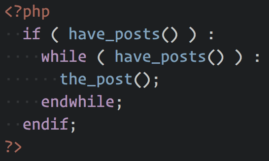
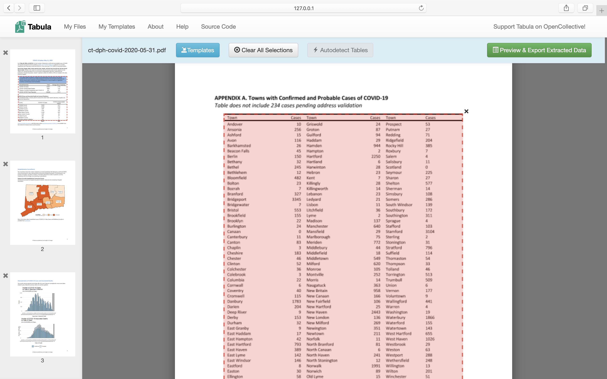

Code-free scraping 101
About me

Tom Cardoso, investigative reporter
at The Globe and Mail
bit.ly/no-code-caj

- Scraping? What?
- Websites, how do they work?
- HTML and its friends
- Distill.io
- Klaxon
- Extracting data w/ Carly Penrose
- What about PDFs?
What is scraping?
Hint: Not this.
Answer:A way of systematically and reproducibly collecting information.
Consists of three steps:
- Visiting a web page
- Selecting and extracting data from that page in an automated way
- Often, saving the results of that extraction to a local file (most often a CSV file or database)
Scraping is useful for:
- Extracting text
- Downloading images
- Bulk downloading files (such as PDFs)
- Automating web form entry
- Receiving automated alerts when a website changes
- Downloading the contents of a website into a table
How do websites work?

Three parts:
- A server, which hosts files and data, and is often an application unto itself that can generate pages on-the-fly.
- A browser, or “client,” which connects to a server and requests stuff.
- The gluey part in the middle: domain names, load balancers, templating engines, etc.
Scraping is primarily concerned with extracting data from what we call the “front end,” or the stuff that gets rendered in your browser (servers are often called the “back end”).
You can extract data directly from a server, but that’s often done through hacking, which is bad.
The key difference: With scraping, you’re selecting and collecting information that’s been made public by the person or organization running the web page. The information’s all public!
The front end is basically an instruction manual:

If web pages were an IKEA dresser…
- HTML would be the assembly instructions.
- CSS would be the coat of paint you apply after the fact.
- JavaScript is the functionality, allowing you to open and close your drawers (most of the time, anyway — this is IKEA, after all…).
For the most part, we only care about the HTML.
We don’t care what the page looks like, or what happens when you click a button. We just want the data!
If you’ve ever hit “View Page Source” in your browser before, you’ll know what we’re talking about.
HTML follows the “Document Object Model,” or DOM.
The DOM is the common structure of all web pages, and is what allows browsers to know how to parse the data they receive from the server.
In our IKEA example, it would be the fact that all furniture follows applicable regulations, and that the assembly instructions display a language that we can understand.
At its core, the DOM (and HTML) follows a tree model. The top-level node is the <html> element, and everything else is a child of that element.
<html>
<body>
<p>Hello, world!</p>
<table>
<tr>
<td>Apple</td>
<td>3 oz.</td>
<td>$14</td>
</tr>
<tr>
<td>Orange</td>
<td>5 oz.</td>
<td>$5</td>
</tr>
</table>
</body>
</html>
At its core, scraping works because websites are templated. For the most part, people don’t code sites by hand. Instead, they build templates, and templates on top of those templates, and so on.
Luckily for us, that means we can take advantage of predictable structures to extract information!
I realize this is a lot to take in. You may be feeling like this…


Enough theory. Let’s talk tools!
First, let’s focus on getting alerts. The principles for alerters and data downloaders are the same, so they’re a great way to practice your scraping skills.
Pros:
- Very easy to use
- Super granular options
Cons:
- By default, extension runs in the browser
- Server-side may require upgrading to a paid model
- No guarantees on what Distill’s doing with the data you give it
Pros:
- Built by journalists, for journalists
- Open source
- Maintained by DocumentCloud
Cons:
- Far fewer options than Distill
- Open source nature means it may be buggier
Let’s talk downloading data!
Bonus slide: Tabula
